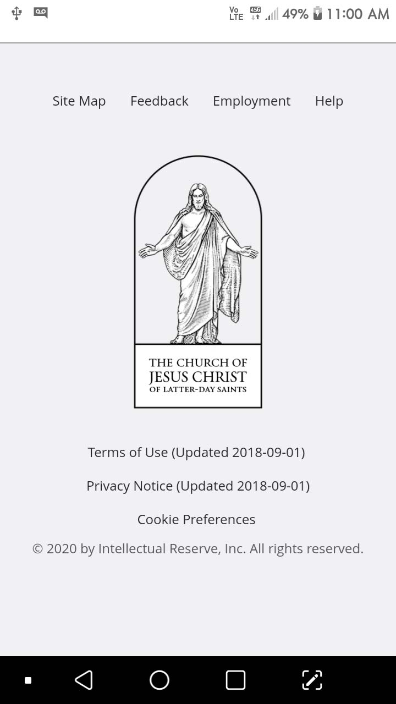
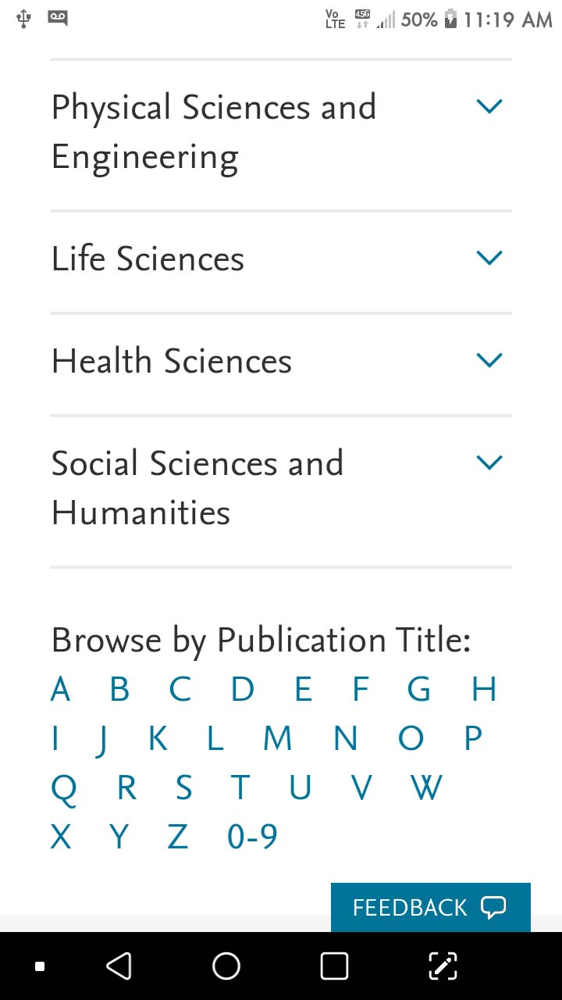

Alignment
The Church of Jesus Christ of Latter-day Saints

We can see both the the text and the logo have the same alignment, even a center alignment.
Visual Hierarchy
The Church of Jesus Christ of Latter-day Saints
We can see the "Create a FREE account" button catches the eye of users because of its color and size.
Hick's Law
Elsevier

We can see how a well filter is used in order to help users find the information they are looking for.